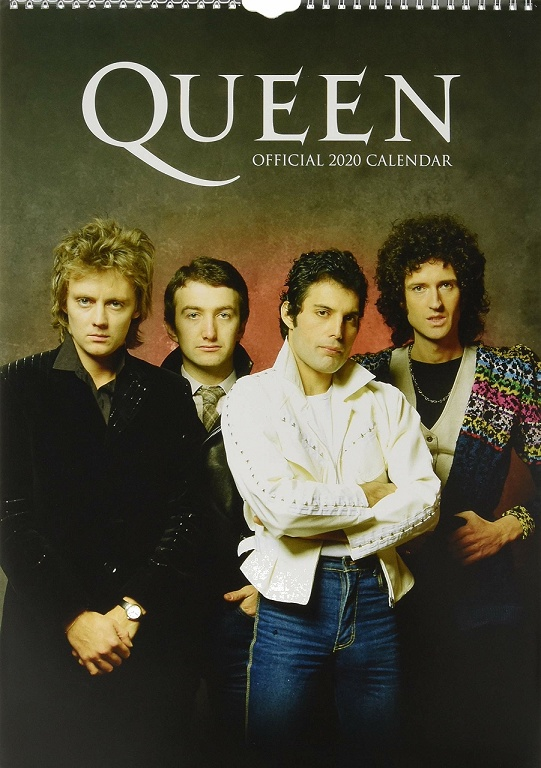

私の好きなバンドを紹介します
????

Queen（クイーン）は、イギリス・ロンドン出身のロックバンド。
1970年代前半のハードロック・ブームの中でデビューし、その後スタイルを変化させながら世界中で成功を手にした。
1億7000万枚〜2億枚の音楽作品を売り上げたとされる。
ウォール・ストリート・ジャーナルの「史上最も人気のある100のロックバンド」にて第3位。
「ローリング・ストーンの選ぶ歴史上最も偉大な100組のアーティスト」にて第52位。
2001年にマイケル・ジャクソン、エアロスミスらと共にロックの殿堂入りを果たしている。
1991年にボーカルのフレディ・マーキュリーが死去してからも、活動は断続的に続いている。
2020年、ギターのブライアン・メイとドラマーのロジャー・テイラーの2人は、ボーカルにアダム・ランバートを迎えて「クイーン+アダム・ランバート」として活動している。
Freddie Mercury(フレディ・マーキュリー)
ボーカリスト&ピアノ

フレディ・マーキュリーはイギリスのロックバンド、「クイーン」のリード・ボーカルであり、シンガーソングライター、音楽プロデューサーでもあった。
ポピュラー・ミュージックの歴史の中でもっとも偉大なシンガーの一人と見なされており、観客を惹き付ける優れたステージ・パフォーマンスと広い(F2-E6)ボーカル・レンジで知られている。
また「ボヘミアン・ラプソディ」や「キラー・クイーン」、「愛にすべてを」、「伝説のチャンピオン」などのヒット曲を作詞作曲した。
1991年11月24日、HIV感染合併症によるニューモシスチス肺炎のため死去。45歳没。

John Richard Deacon(ジョン・リチャード・ディーコン)
ベース

クイーンのメンバーの中で最年少。温厚な人柄で、メンバー間の衝突で訪れたバンド解散の危機を幾度も救った。
ベース以外にもギター、ピアノ、ドラムの演奏も出来るマルチプレイヤーである（ワン・ヴィジョンのミュージック・ビデオなどで確認する事が出来る）。
クイーンのメンバーでは、一番多くの子をもうけた。
クイーンのボーカルであるフレディ・マーキュリーを1人のアーティストとして尊敬しており、「クイーンのボーカルはフレディしかいない」と度々発言している。
また、彼自身が歌うことやコーラスをとることはほとんどなく、「自分は音痴だ」とも語っている（ミュージックビデオ内で歌っているような姿が見えるが、口パクであることがほとんどである。ライブではコーラスを取ることもしばしばある。）。
テイラーとはバンド時代、プライベートでも仲がよく、特に80年代は双方の家族ぐるみで遊びに行っている。
電子系の大学を卒業しており機械関係に強かったため、ブライアン・メイや自身のエフェクターやアンプをたびたび作製したり改造するなど、演奏や作曲以外でもサウンド面でバンドに貢献していた。中でも、メイが使用していたディーコン作製のオリジナル・アンプ、通称“DEACY AMP（ディーキー・アンプ）”は、ギター・レッド・スペシャルとエフェクターとギターテクニックの組み合わせにより七色のサウンドを出すことが可能だった。

Brian Harold May(ブライアン・ハロルド・メイ)
ギター

ミュージシャン、また天文学者（天体物理学博士）。
ロックバンド・クイーンのギタリストであり、自作のギター「レッド・スペシャル」とピックの代わりに使用する硬貨により独特の音色を奏でるギタリストとして有名である。
また自作の曲ではリード・ヴォーカルを取ることもある。ミドルセックス州のハンプトン（英語版）出身。
『ローリング・ストーン』の選ぶ「歴史上最も偉大な100人のギタリスト」において第39位、2011年の改訂版では第26位。
また熱心な動物愛護運動家でもある。 大英帝国勲章も授与されている。

Roger Meddows Taylor(ロジャー・メドウス・テイラー)
ドラムス

1973年、アルバム『戦慄の王女』でデビュー。
クイーンではドラムスのほかにコーラスや、一部の曲でボーカルも担当しており、ベースやギター、キーボードなども演奏するマルチプレイヤーでもある。
クイーンの「RADIO GA GA」、「カインド・オブ・マジック」、「ヘヴン・フォー・エヴリワン」などのヒット曲を作詞作曲している。
クイーンとは別に、ソロ活動やザ・クロスというバンドを結成しての活動も行っていた。
フレディの死後もクイーン+ポール・ロジャースとして活躍するなど、現役ミュージシャンとして活動を続けている。
「ローリング・ストーン誌の選ぶ歴史上最も偉大な100人のドラマー」において74位。

Bohemian Rhapsody(ボヘミアン・ラプソディ)

- ここをクリック
Killer Queen(キラー・クイーン)

- ここをクリック
Another one bites the dust(地獄へ道づれ)

- ここをクリック
Don't Stop Me Now(ドント・ストップ・ミー・ナウ)

- ここをクリック
日本文化への興味
クイーンのメンバーはツアー以外にも何度かプライベートで来日しており、日本文化に深い興味・関心を寄せている。
美術学校で学んだ経験もあったマーキュリーは伊万里焼や九谷焼等を趣味で収集しており、それらの目利きもできたという。>
また、自宅の庭に日本庭園を造っていた。新宿にはマーキュリーの行きつけのゲイバーがあり、度々通っていたと思われる。
メイは来日した際、日本の畳が気に入ったが、大きすぎて持ち帰れないことに非常に残念がっていたという。
自分のコレクション
経営学部
ZM19248
林盛